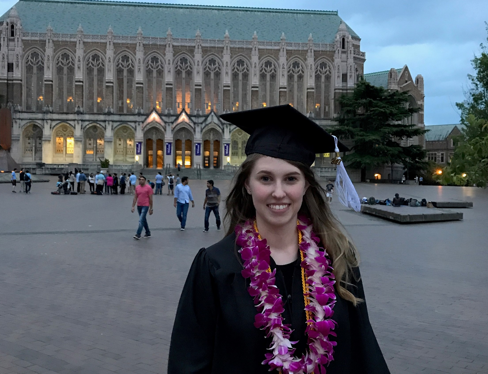

See below for more details on me and my connection to Whidbey Island!
Early life and education
I grew up in Redmond, Washington. I earned an undergraduate degree from the University of Washington. I majored in Communication, Sociology and Swedish, with a minor in Diversity. In the summer of 2015, I studied Swedish abroad with the Uppsala International Summer Session (UISS). While I spent most of my childhood in the city and suburbs, my family got a cabin on Whidbey Island when I was very young and my parents moved there full-time once I went to college.

Me graduating from the University of Washington
What is the UISS?
The Uppsala International Summer Session is a program for students and professionals who are interested in taking intensive Swedish courses during the summer. While Uppsala doesn't have a beach, you're just a short ride to Stockholm where you can explore the archipelago. For more information, you can check out their website here.
Me with my friend in Uppsala, Sweden
Professional life
After graduating from college, I moved to Whidbey for a short amount of time. However, when I got a job at Brooks Running in Seattle, I moved back into the city. I currently work in the eCommerce department at Brooks.
The view of Seattle from Brooks during sunset
Connection to Whidbey
My family has had a house on Whidbey Island for 15 years now. I've experienced the island as a kid, teenager and adult and still find new things to explore each time I visit. I try to get over to the island whenever I can.
Walking on the beach with my family near Lagoon Point